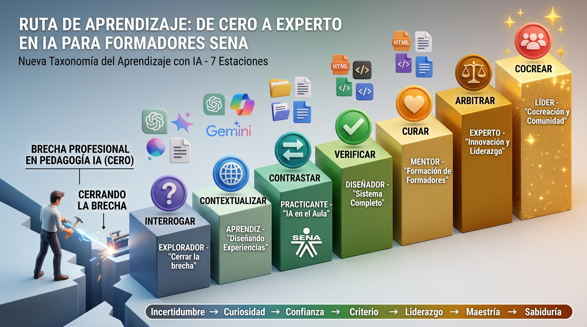

Es el documento oficial que establece el deber ser del programa. Es la norma, el marco institucional. Responde a las preguntas: ¿Qué enseñar? ¿Para qué? ¿Cómo evaluar?
Elaborado por: Equipo de Diseño Curricular del SENA (Centros de Comercio, Agropecuario, Industria, Minería, etc.).
Es la puesta en práctica del diseño. Es la interpretación pedagógica y metodológica que hace el instructor para llevar el programa al aula. Responde a: ¿Cómo enseñar? ¿Con qué herramientas? ¿En qué orden?
Elaborado por: Diseño instruccional y pedagógico para la innovación educativa con IA.
La ruta de los 7 Bootcamps es congruente con el diseño curricular porque cada bootcamp tributa al desarrollo de uno o más RAPs. La siguiente es la correlación ajustada:
Identificar la aplicabilidad de la IA según el contexto formativo y principios de la FPI.
→ Bootcamp 1: InterrogarIntegrar la IA en la construcción de actividades de aprendizaje de acuerdo con el contexto y la intencionalidad pedagógica.
→ Bootcamps 2 y 3: Contextualizar y ContrastarValidar la pertinencia de las actividades de aprendizaje según criterios técnicos y pedagógicos.
→ Bootcamps 4, 5, 6 y 7: Verificar, Curar, Arbitrar y CocrearNota: El RAP 3 se convierte en un proceso de validación escalonada: auto-validación (BC4), validación entre pares (BC5), validación institucional (BC6) y validación social/colaborativa (BC7).
El Diseño Curricular (PDF) y el Desarrollo Curricular (Ruta de los 7 Bootcamps) no son opuestos: son dos caras de la misma moneda. El primero garantiza el cumplimiento institucional; el segundo garantiza que el aprendizaje sea significativo, situado y transformador.
Explora la pestaña "Ruta de Aprendizaje" para ver el detalle de los 7 Bootcamps.
Aprendizaje situado · Aprendizaje a la medida · Progresión auto-gestionada
Cada bootcamp parte de problemas reales del contexto SENA: los RAP de los programas, los perfiles de los aprendices, las condiciones del aula y los recursos disponibles. No se aprende IA en abstracto, sino resolviendo situaciones auténticas de la práctica docente.
Contexto realCada participante avanza a su propio ritmo, elige su RAP, su programa y su nivel de profundidad. Los bootcamps son modulares y auto-gestionados: se adaptan a la disponibilidad (1-4 horas semanales), al punto de partida y a las metas personales de cada instructor.
Ritmo personalLos 7 bootcamps son escalones independientes pero conectados. Cada uno tiene un objetivo único, un producto verificable y un mecanismo de validación. No se avanza al siguiente hasta cumplir el producto del actual. Todos persiguen el mismo objetivo final, pero cada uno lo alcanza a su manera.
EscalableCada bootcamp = un verbo taxonómico + un nivel + un producto verificable + un RAP asociado

Cerrar la brecha. Aprender a preguntar con criterio, comparar LLMs, explorar multimodalidad y construir una tabla benchmark.
Diseñar experiencias. Adaptar los recursos de IA al contexto SENA: RAP, perfiles de aprendices, condiciones del aula.
IA en el aula. Implementar la experiencia, recoger evidencia y comparar los resultados vs. las expectativas iniciales.
Sistema completo. Diseñar rutas diferenciadas para 20 avatares, crear artefacto HTML y verificar cada componente con criterios de calidad.
Formación de formadores. Seleccionar, organizar y enriquecer el conocimiento en un taller replicable y mentorizar a otros colegas.
Innovación y liderazgo. Tomar decisiones informadas y éticas, mediar entre criterios y construir acuerdos institucionales.
Cocreación y comunidad. Generar valor nuevo y compartido en colaboración con otros actores, integrando saberes y perspectivas.
Todos los participantes llegan al mismo destino, pero cada uno elige su camino, su ritmo y su profundidad.
El participante decide cuándo y cómo avanzar. Los recursos están disponibles 24/7 y el acompañamiento es puntual.
Cada bootcamp tiene una evidencia tangible. No hay ambigüedad: o el producto cumple, o se ajusta y se vuelve a intentar.
Los que avanzan más rápido mentorizan a los que van más lento. El conocimiento se construye en colectivo.
Cada escalón completado es un logro visible. El participante sabe exactamente dónde está y qué le falta.
Se adapta a la disponibilidad real (1-4 horas semanales) y a las condiciones institucionales del SENA.
Cómo se articulan los 7 bootcamps en la ruta de aprendizaje
Verbo taxonómico, nivel, RAP asociado, duración y producto verificable
| # | Verbo | Nivel | RAP | Duración | Producto Verificable |
|---|---|---|---|---|---|
| 1 | Interrogar | Explorador | RAP 1 | 2 horas | Tabla benchmark + análisis multimodal |
| 2 | Contextualizar | Aprendiz | RAP 2 | 12 horas | 3 recursos + 1 experiencia completa |
| 3 | Contrastar | Practicante | RAP 2 | 30 días | Implementación documentada + reflexión |
| 4 | Verificar | Diseñador | RAP 3 | 20 horas | Sistema completo + artefacto HTML |
| 5 | Curar | Mentor | RAP 3 | 40 horas | Taller dictado + automatización + mentoría |
| 6 | Arbitrar | Experto | RAP 3 | Continuo | Artículo + guía metodológica replicable |
| 7 | Cocrear | Líder | RAP 3 | Continuo | Red de mentores + publicación colaborativa |
El curso "Construcción de Experiencias de Aprendizaje basadas en IA" no impone un ritmo único. Cada instructor avanza desde su propio punto de partida, con sus propios tiempos y sus propios intereses, pero con un destino compartido: convertirse en un referente en el uso pedagógico y crítico de la IA.